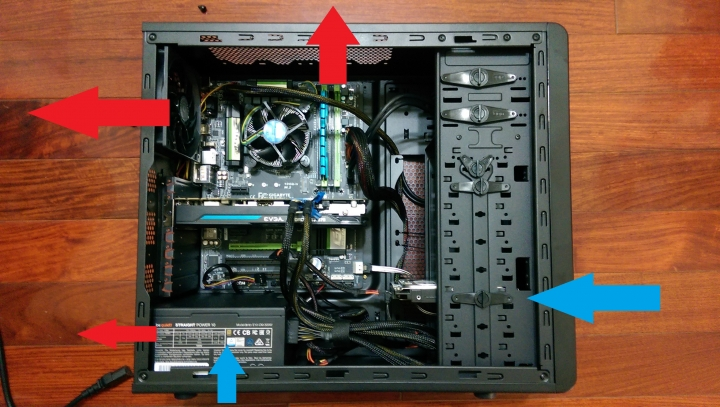
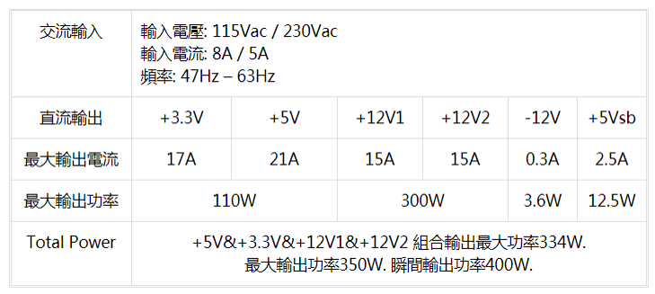

機殼、散熱、電供
CASE & COOLING & POWER SUPPLY
機殼 - Case
機殼就是用來容納電腦零件的地方,避免他們跑進灰塵或任何小動物的侵襲。
散熱 - Heat Dissipation
電子零件都不喜歡熱,而廠商也會為了避免過熱造成損毀和效能不好,對硬體做降頻,進而再度造成效能下降,使用起來就會卡頓,因此散熱格外重要。常見的散熱能分為三種: 風扇 水冷 塔散。
風扇 - Fan
通常風扇都是通用的散熱方案,能裝滿是最好的。通常最好的設置就是讓前板進風後板出風。
水冷 - Water Cooling
水冷可分為一體式水冷(封閉式水冷)和開放式水冷。開放式水冷一般人無法正常安裝,因為較為複雜。一體式水冷通常用於cpu散熱，由水冷頭裝在cpu，然後裡面的水把熱帶往排熱器，再然後排熱器上的風扇會幫排熱器散熱，水會再回去排冷頭。有些廠商會在高階顯卡上加水冷。
塔散
主要也是用來散熱cpu。塔散相較水冷之下比較便宜。好一些的塔散散熱能力可以說是不比水冷差。
散熱方案安裝指南
- 水冷可能會有漏水可能，但有些廠商有漏水保證，萬一漏水會賠償受損零件
- 水冷也是有風扇,所以不一定比較靜音，得看實際使用上
- 安裝塔扇和水冷需注意機殼規格是否容得下和cpu腳位是否吻合
- 塔扇安裝盡量選用鎖螺絲的塔扇，因為塔扇一般都較重,應避免使用卡榫的以防掉落
電源供應器 - Power Supply Unit(PSU)
電供是電腦的心臟，供給每個元件的運作的電源。電供還有一個重要的任務，就是把交流電轉直流電。
ATX vs FSX
ATX為一般電供的規格。
SFX通常用於小型機殼的電供。
大小:ATX>SFX
銅牌?金牌?日系?(80+認證)
在交流電轉換直流電時候,必然有電能損耗，因此每個電供能保證的電流轉換不一樣，也因此分為白牌、銅牌、銀牌、金牌、白金牌、鈦金牌來認證電供所能保障的最低轉換效率。
| 白牌 | 銅牌 | 銀牌 | 金牌 | 白金牌 | 鈦金牌 | |
| 20% | 80% | 82% | 85% | 87% | 89% | 90% |
| 50% | 80% | 85% | 88% | 90% | 92% | 94% |
| 100% | 80% | 82% | 85% | 87% | 90% | 92% |
模組化，非模組化
簡單來說就是能不能讓你選擇電供上面的線材拆拔。模組化的就是可以選擇要用的線，一端接上電供，一端接上零件，非模組化則是不能拔掉用不到的線
保護機制
- OVP 過電壓保護：超過電壓最大限制時，自動關閉電源供應器
- OCP 過電流保護：超過電流負荷時，自動關閉電源供應器
- OPP 過功率保護：超過電源最大負載 110%~130% 時，自動關閉電源供應器
- UVP 過低電壓保護：超過電壓最小值限制時，自動關閉電源供應器
- OTP 過溫保護：感溫元件測量到溫度超過限制時，自動關閉電源供應器
- SCP 短路保護：當任一零件的電阻值低於0.1歐姆時，自動關閉電源供應器
電源供應器安裝指南
- 最好選用有保護機制的,尤其是OCP,否則當電供突然掛掉會使其他零件連帶受損
- 買越好認證的電供會比較省電,但是轉換認證跟電容用料好壞沒關西
- 千萬別買來路不明的電供
如何挑選適合的電供?
除了電腦配備總瓦數要小於電供瓦數,還需注意:電腦中最耗電的處理器和顯示卡 由 +12V 負責供電。以上來說須查詢自己配備是否有超過那部分的供應瓦數，超過就不行。除此之外還需注意顯卡供電可能會需要用到的6PIN(8PIN)線電供上是否有提供足夠。
以TT耀越 Litepower 400W示範圖，在使用這個電供的情況下，顯卡+硬碟+CPU最大供耗不能超過300W
